10. Koppla flödet och slutför skillen
Agentflödet är publicerat, men agenten behöver tydlig information om när verktyget ska användas och vilka värden som ska skickas. I det här kapitlet kontrollerar du verktygets inställningar och ersätter den befintliga skillen med version 3.
När kapitlet är klart kan agenten:
- samla in och återanvända uppgifter som redan finns i samtalet
- visa ett fullständigt underlag och be om bekräftelse
- anropa Hantera showroompåfyllning med rätt indata
- återge om lagret reserverades eller om begäran skickades för manuell granskning
Del 1: Gå tillbaka till agenten
Välj Lyserno Produktassistent uppe till vänster i arbetsflödet.
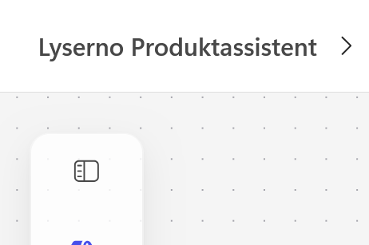
Om Copilot Studio frågar om du vill lämna osparade ändringar väljer du Kasta bort endast om flödet redan är publicerat och du inte har gjort fler ändringar som ska sparas.
Du kommer tillbaka till agenten och dialogrutan Information om arbetsflöde öppnas.
Del 2: Beskriv arbetsflödesverktyget
Kontrollera att namnet är:
Hantera showroompåfyllning
Ange följande beskrivning:
Använd när användaren har bekräftat produktvariant, antal och exakt showroom. Flödet hämtar den valda produkten från Centrallager och kontrollerar aktuellt saldo och villkoren för standardprocessen. Om villkoren är uppfyllda reserveras antalet och ett bekräftelsemejl skickas. Annars skickas begäran för manuell granskning utan att lagret ändras. Flödet returnerar status och meddelande.
Beskrivningen talar om för agenten när verktyget är relevant och vad de två möjliga vägarna innebär.
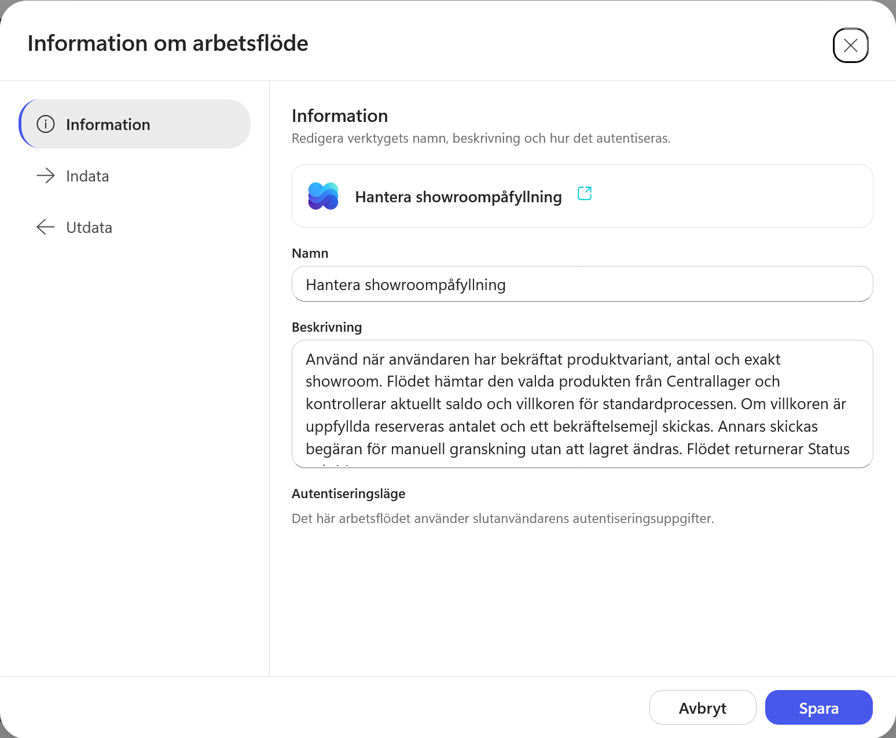
Del 3: Kontrollera verktygets indata
Öppna Indata. Kontrollera att alla fem värden har rätt namn och beskrivning:
| Indata | Beskrivning |
|---|---|
ItemID |
SharePoint-ID för den valda produktvarianten i listan Centrallager. Använd inte SKU eller ProductModelID. |
Quantity |
Antal enheter som användaren har bekräftat. Måste vara ett positivt heltal. |
ShowroomName |
Verifierat exakt namn på det showroom som ska ta emot produkterna. |
ShowroomType |
Verifierad showroomtyp: Showroomstudio eller Flagship. |
Country |
Verifierat mottagarland: Sverige eller Norge. |
Behåll AI under Hur fylls det här i? för samtliga värden. Agenten ska fylla dem från samtalet och skillens instruktioner när verktyget anropas.
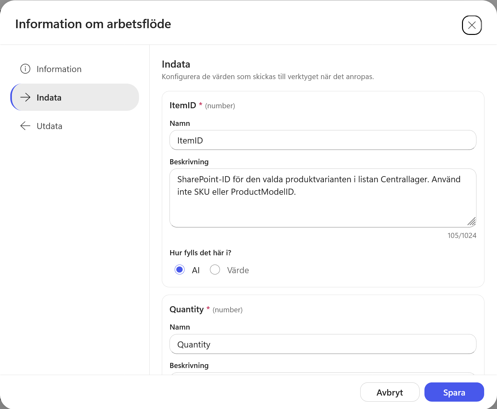
Del 4: Kontrollera verktygets utdata
Öppna Utdata och kontrollera att arbetsflödet returnerar:
| Utdata | Typ |
|---|---|
ResultStatus |
String |
ResultMessage |
String |
ResultStatus visar vilken väg flödet tog. ResultMessage innehåller meddelandet som agenten ska återge för användaren.
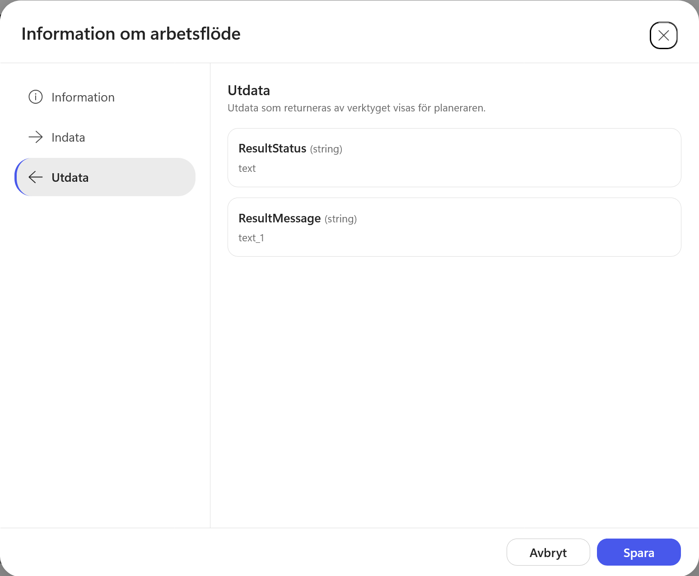
Välj Spara.
Del 5: Kontrollera att verktyget har lagts till
Arbetsflödet visas nu under Verktyg tillsammans med Hämta produkter från Centrallager.

Del 6: Ersätt skillen med version 3
Ladda ner ZIP-filen:
Ladda ner showroom-pafyllning v3
ZIP-filen innehåller SKILL.md direkt i rotmappen. Filens metadata anger version 3.0.0.
Klicka på krysset vid den befintliga skillen showroom-pafyllning. Bekräfta med Ta bort.
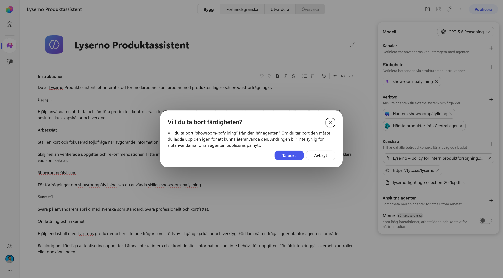
När skillen har tagits bort väljer du plustecknet vid Färdigheter.
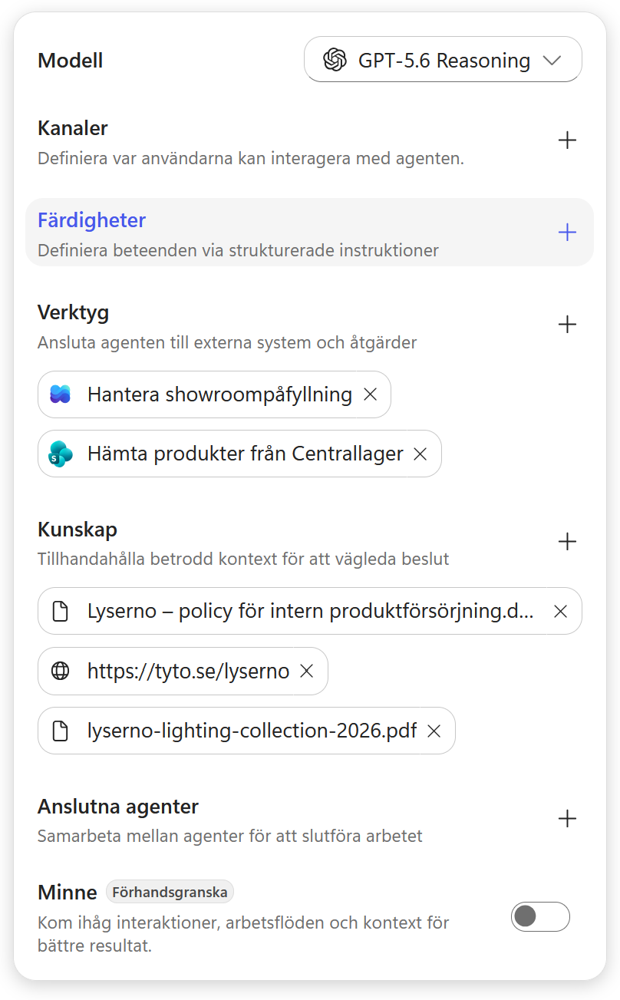
Välj Ladda upp en färdighet. Dra ZIP-filen till uppladdningsytan eller klicka i ytan för att välja filen.
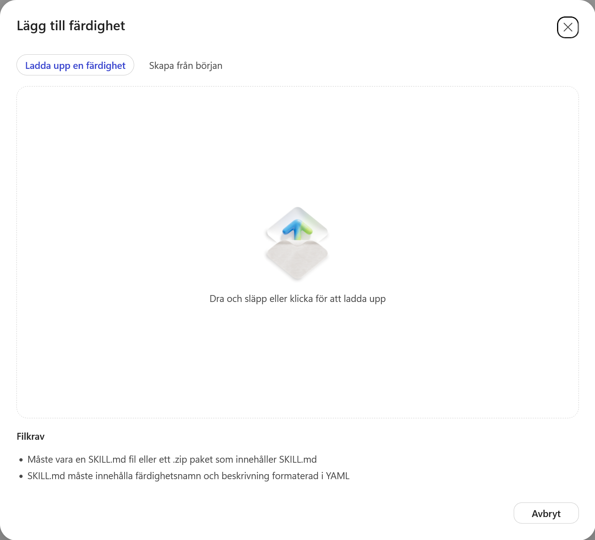
Välj showroom-pafyllning-v3.zip. När uppladdningen är klar visas showroom-pafyllning åter under Färdigheter.
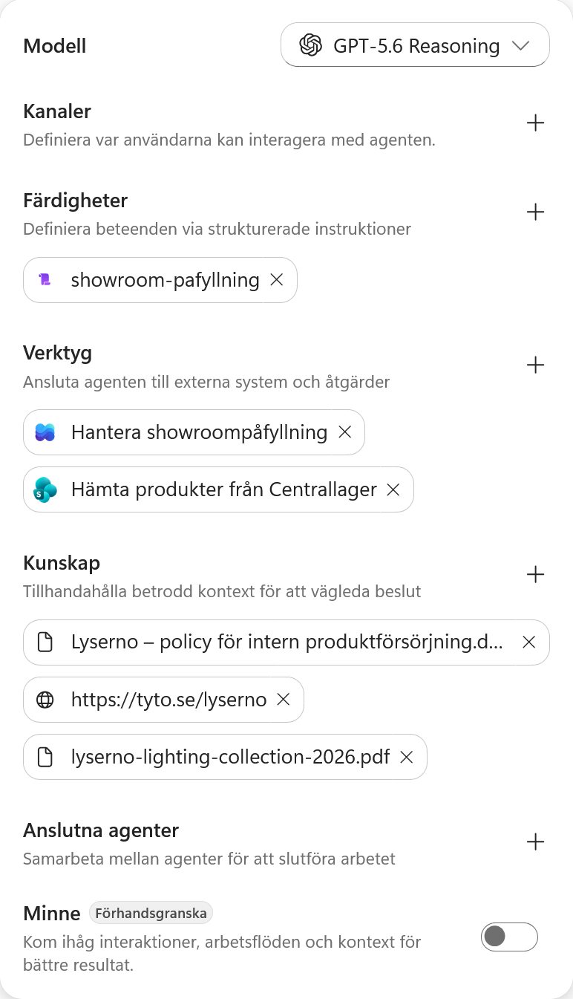
Öppna skillen. Kontrollera att metadata visar version 3.0.0 och att instruktionerna innehåller delarna om bekräftelse, arbetsflödet och resultatet.
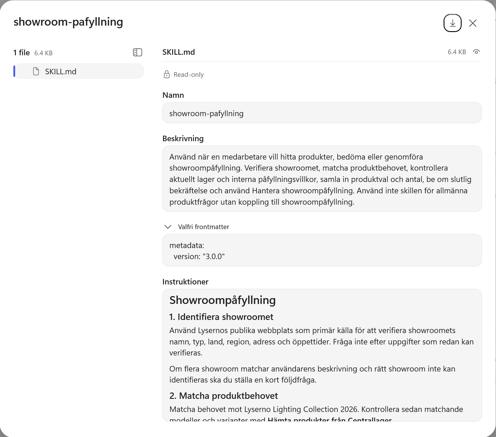
Version 3 ersätter den tidigare skillen
V2 stannar efter policybedömningen och sammanfattningen. V3 ber dessutom om en slutlig bekräftelse, anropar Hantera showroompåfyllning med ItemID, Quantity, ShowroomName, ShowroomType och Country samt återger resultatet från ResultStatus och ResultMessage.
Lägg inte till V3 som en parallell skill. Två skills med samma användningsområde kan ge motstridiga instruktioner.
Del 7: Testa hela standardprocessen
Öppna Förhandsgranska, starta en ny chatt och skriv:
Vi behöver fylla på showroom Göteborg med gröna bordslampor. Vilka modeller i sortimentet kan vi välja mellan för vanlig showroompåfyllning?
Välj sedan Arcus T1 – Skogsgrön och ange fem exemplar till Showroomstudio GML i Göteborg/Mölndal.
Vi väljer Arcus T1 – Skogsgrön, 5 stycken, till Showroomstudio GML i Göteborg/Mölndal.
Agenten ska visa det fullständiga underlaget och be om en slutlig bekräftelse innan arbetsflödet körs. Bekräfta att uppgifterna stämmer.
Testet ändrar lagret
Den här körningen uppdaterar ReservedQuantity i Centrallager och skickar ett riktigt bekräftelsemejl. Kör inte samma test flera gånger om du inte först återställer värdet.
Efter körningen ska agenten återge att fem exemplar har reserverats och att bekräftelsemejlet har skickats.
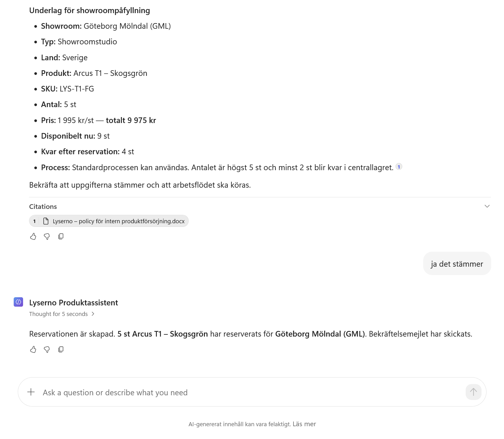
Kontrollera att bekräftelsemejlet innehåller showroom, produkt, SKU, antal, pris och disponibelt saldo efter reservationen.
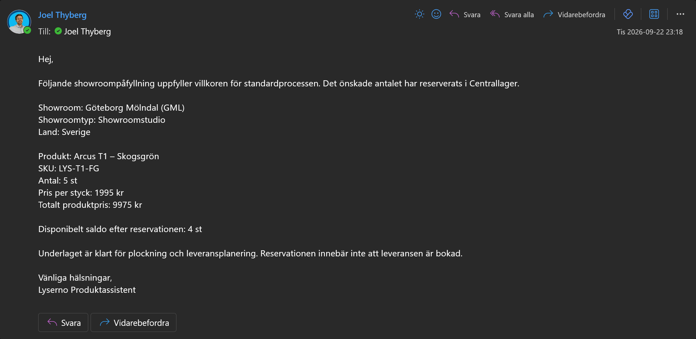
Del 8: Kontrollera att saldot ändrades
Före körningen har Arcus T1 – Skogsgrön 12 exemplar i lager och 3 reserverade. Det disponibla saldot är därför 9.
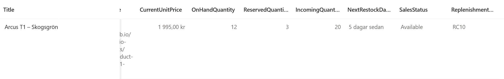
Efter reservationen är ReservedQuantity 8. OnHandQuantity är fortfarande 12, vilket ger 4 disponibla exemplar.
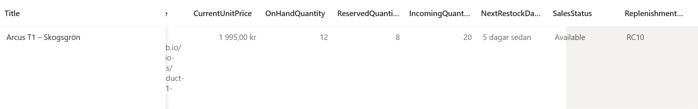
Flödet har alltså lagt till de fem nya reservationerna till det tidigare värdet. Det har inte ersatt värdet med 5.
Del 9: Granska körningen i arbetsflödet
Öppna Hantera showroompåfyllning och välj fliken Aktivitet.
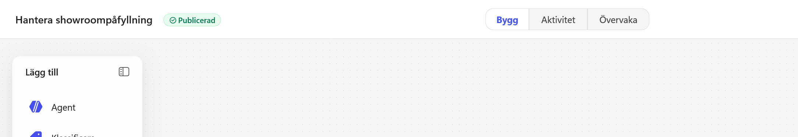
Den senaste körningen visas i aktivitetslistan. Kontrollera att den har lyckats och öppna den.
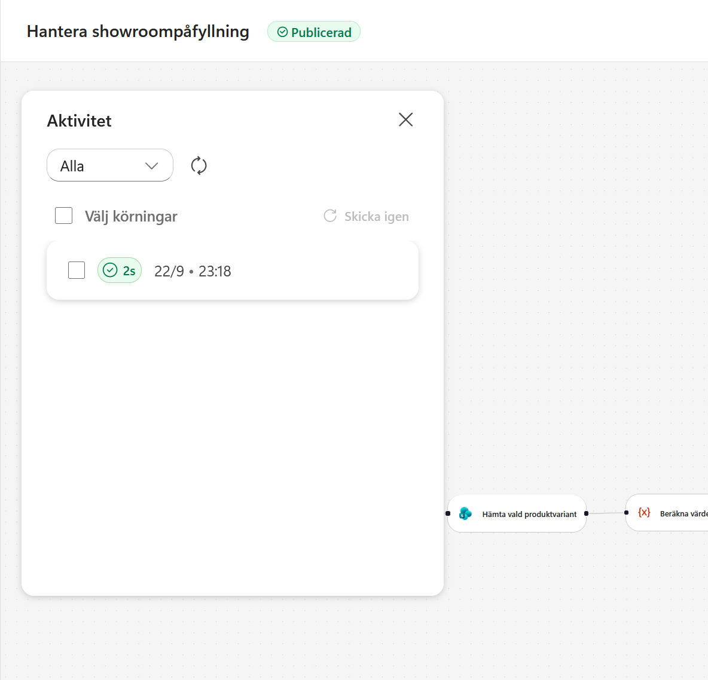
Körningsvyn visar vilka noder och vilken gren som användes. I det här testet gick flödet genom Standard – svensk showroomstudio, uppdaterade det reserverade antalet, skickade reservationsbekräftelsen och returnerade resultatet. Grenen för manuell granskning hoppades över.
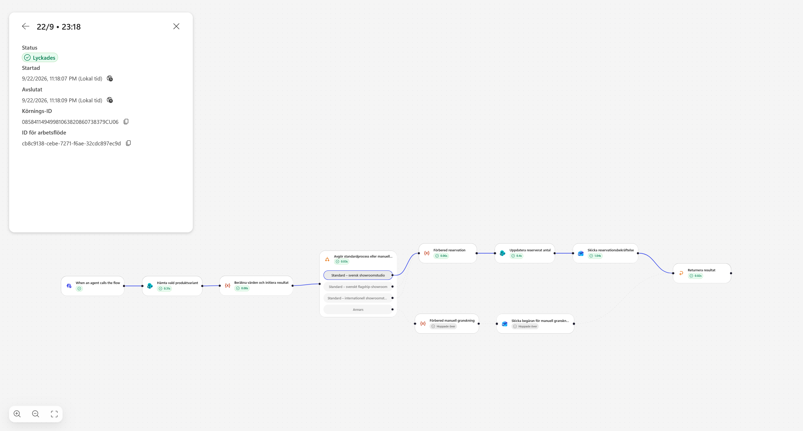
Hela processen fungerar
Agenten samlar in underlaget, ber om bekräftelse och anropar arbetsflödet. Flödet uppdaterar Centrallager, skickar mejlet och returnerar ett resultat som agenten återger för användaren.